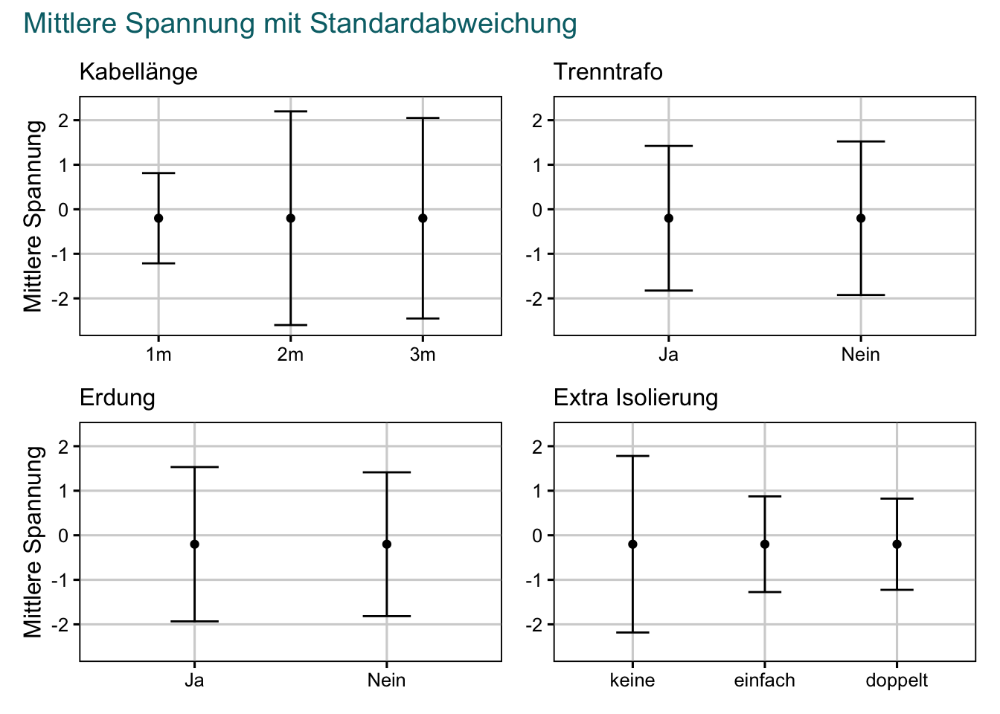

3 Testmessungen
library(ggplot2)
library(forcats)
library(readr)
library(dplyr)
library(tidyr)
library(patchwork)
source(here::here("R/read_scope.R"))
temp_data <-
lablight_df |>
mutate(
across(length:extra_ins, as_factor),
length = fct_relevel(length, "1", "2", "3") |>
fct_recode("1m" = "1", "2m" = "2", "3m" = "3"),
iso_traf = fct_relevel(iso_traf, "TRUE", "FALSE") |>
fct_recode("Ja" = "TRUE", "Nein" = "FALSE"),
ground = fct_relevel(ground, "TRUE", "FALSE") |>
fct_recode("Ja" = "TRUE", "Nein" = "FALSE"),
extra_ins = fct_relevel(extra_ins, "FALSE", "single", "double") |>
fct_recode(
"keine" = "FALSE",
"einfach" = "single",
"doppelt" = "double"
)
) |>
unnest(measurement) |>
slice_sample(prop = 0.1)
p <-
temp_data |>
drop_na() |>
ggplot() +
aes(
x = seconds * 1000,
y = volts,
colour = as_factor(rep),
group = filename
) +
geom_line() +
labs(
title = "Störsignal",
subtitle = "durch Einschalten der Raumbeläuchtung.",
x = "Zeit in ms",
y = "Spannung in Volt"
) +
xlim(-0.1, 0.2) +
facet_wrap(
facets = vars(
extra_ins = glue::glue("Iso.: {extra_ins}"),
iso_traf = glue::glue("Trenntrafo: {iso_traf}"),
ground = glue::glue("Erdung: {ground}"),
length = glue::glue("Kabellänge: {length}")
),
ncol = 4
) +
theme(legend.position = "none")
p
Abbildung 3.1: Störsignal, das durch das betätigen des Lichtschalters im Messspitzenlabor hervorgerufen wurde.
plot_sd <- function(data, x) {
p <-
data |>
mutate(
across(length:extra_ins, as_factor),
length = fct_relevel(length, "1", "2", "3") |>
fct_recode("1m" = "1", "2m" = "2", "3m" = "3"),
iso_traf = fct_relevel(iso_traf, "TRUE", "FALSE") |>
fct_recode("Ja" = "TRUE", "Nein" = "FALSE"),
ground = fct_relevel(ground, "TRUE", "FALSE") |>
fct_recode("Ja" = "TRUE", "Nein" = "FALSE"),
extra_ins = fct_relevel(extra_ins, "FALSE", "single", "double") |>
fct_recode(
"keine" = "FALSE",
"einfach" = "single",
"doppelt" = "double"
)
) |>
unnest(measurement) |>
group_by({{ x }}) |>
summarise(
median_volts = median(volts),
standard_deviation = sd(volts),
standard_error = plotrix::std.error(volts)
) |>
ggplot() +
aes(
x = {{ x }},
y = median_volts
) +
geom_errorbar(
aes(
y = median_volts,
ymin = median_volts - standard_deviation,
ymax = median_volts + standard_deviation
),
width = 0.25
) +
geom_point() +
labs(y = "Mittlere Spannung") +
ylim(-2.6, 2.3) +
theme(axis.title.x = element_blank())
p
}
p1 <- plot_sd(lablight_df, length) +
labs(subtitle = "Kabellänge")
p2 <- plot_sd(lablight_df, iso_traf) +
labs(subtitle = "Trenntrafo") +
theme(axis.title.y = element_blank())
p3 <- plot_sd(lablight_df, ground) +
labs(subtitle = "Erdung")
p4 <- plot_sd(lablight_df, extra_ins) +
labs(subtitle = "Extra Isolierung") +
theme(axis.title.y = element_blank())
(p1 + p2) / (p3 + p4) &
plot_annotation(title = "Mittlere Spannung mit Standardabweichung")